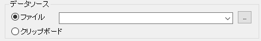

FAQ-414 クリップボードやwebページからどのようにデータをインポートしたら良いでしょうか?
Import-from-Clipboard-or-Web
最終更新日：2020/09/07
- アプリケーションまたはWebページからデータをコピーします。
- Originで、データ: ファイルからインポート: インポートウィザードまたはインポートウィザードツールバーボタンをクリックして、インポートウィザードを開きます。
- データソースをクリップボードにセットし、インポートウィザードのページを進みます。
- 完了ボタンをクリックしてインポートを完了します。
- 
Notes:
- 新しいバージョンのOriginは、データコネクタを使用したWebデータの直接インポートをサポートしています。データコネクタは、一般的なWebデータ形式をサポートします。詳細は、Webに接続を参照ください。
- クリップボードからOriginに文字列を貼り付ける場合は、こちらのFAQをお読みください。
|
キーワード: コピー